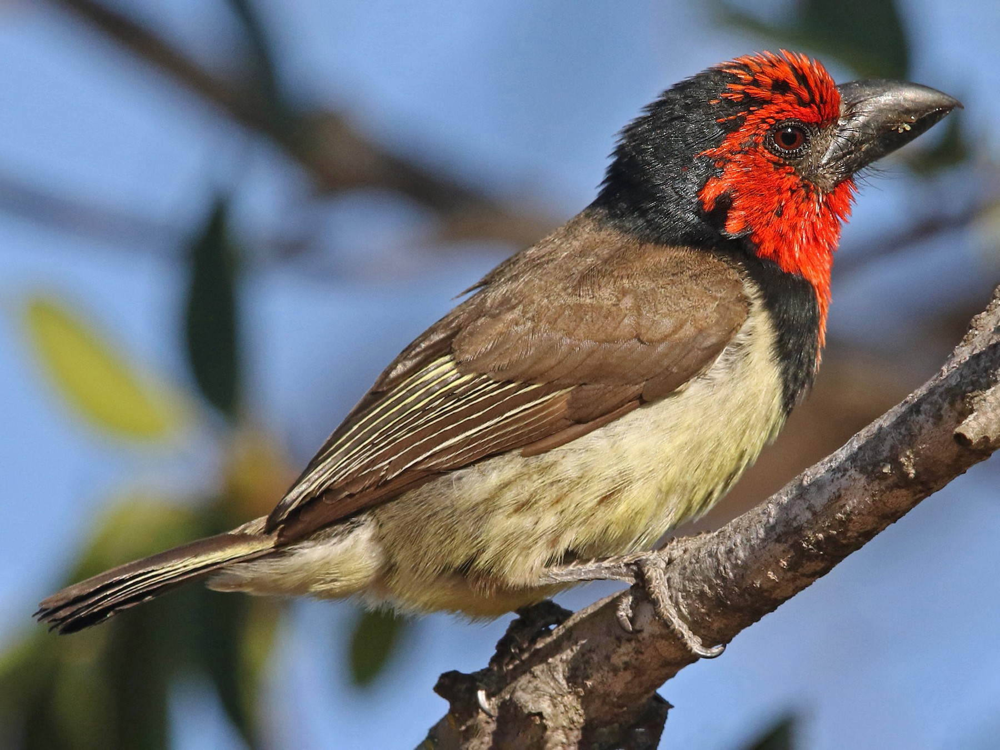

Chez le mâle adulte, la tache frontale, le capuchon, les sourcils, le dessous des yeux, les couvertures
auriculaires, les joues ainsi que la gorge et le haut de la poitrine composent un ensemble uni qui varie du
rouge à l'orange-rouge et même éventuellement au rose-rouge. Une large bande de plumes noir luisant forme une
sorte de collier qui englobe l'arrière du capuchon, la partie postérieure des oreillons et les côtés du cou
atteignant le haut du manteau et descendant jusqu'au milieu de la poitrine. La partie centrale du dos est
variablement vermiculée de brun, de noir et de jaune pâle. Les plumes ont de si larges terminaisons jaunes que
le croupion et les sus-caudales de certains individus paraissent parfois entièrement jaunes. La queue est brune
dessus, plus gris-brun dessous avec de très fines bordures jaunâtres au niveau des rectrices externes.
Taille : 19 cm
Poids : 44 à 73 g
Ordre : Piciformes
Famille : Lybiidés
Genre : Lybius
Espèce : torquatus
Les barbicans à collier se reconnaissent immédiatement à leurs duos bruyants accompagnés de battements d'ailes
que l'on peut retranscrire de la façon suivante : "too-puddly, too-puddly, too-puddly". Selon les sexes, les
partitions paraissent légèrement différentes : les mâles ont tendance à produire des cris bas alors que ceux des
femelles semblent plus aigus. Ces oiseaux donnent la pleine performance de leur voix au cours des parades de
salutations. Au cours de ces dernières, la note principale est un "tyaw" clair et bruyant, ne durant guère
qu'une demi-seconde et qui est acommpagnée de "ddd" ou de "zzz" grinçants. Tous les membres du groupe sont
participants. Des notes grinçantes sont également émises pendant les échanges rituels de nourriture. Pour
communiquer ou garder le contact, les barbicans à collier délivrent des notes variées et portant à longue
distance "chchchch" ou "tsh-sh-sh".